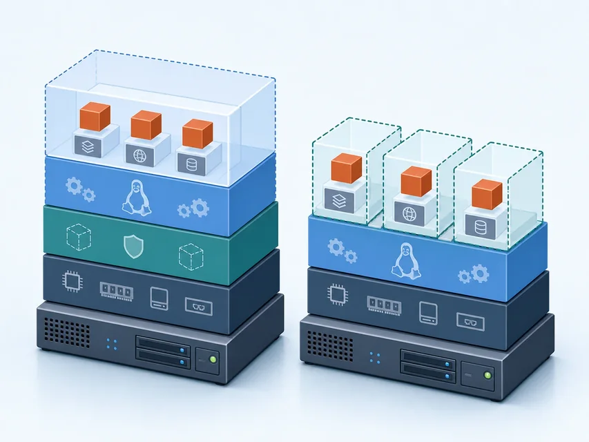
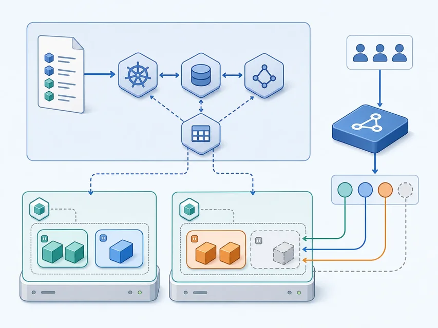

云主机
提供虚拟处理器 CPU、内存、磁盘和网卡
应用依赖一套完整的客户操作系统
把应用交给可编排的运行环境
 VER. 2608
Built with impress.js
VER. 2608
Built with impress.js
沿着对象关系和多层证据解释容器应用如何部署、访问并回收
应用不必每次都携带一套完整的客户操作系统
提供虚拟处理器 CPU、内存、磁盘和网卡
应用依赖一套完整的客户操作系统
提供可调度的应用运行环境
应用及依赖通常共享宿主操作系统内核
容器云不是把云主机换一个名字，而是改变了云服务的主要交付边界
容器共享宿主内核，性能差异取决于工作负载和平台条件
以虚拟硬件承载完整客户操作系统，隔离边界更厚
以进程和资源边界封装应用，通常共享宿主内核
都需要资源限制、网络、存储和权限配置才能稳定运行
启动速度和资源占用取决于工作负载、镜像、节点和平台实现

“更快、更省资源”是条件性比较，不是容器的绝对承诺
| 场景 | 请先判断 | 需要找到的证据 |
|---|---|---|
| 一台完整 Linux 操作系统虚拟机 | 虚拟机／容器／证据不足 | 虚拟硬件、客户操作系统、运行时或资源边界 |
| 共享宿主内核的 Web 服务进程组 | 虚拟机／容器／证据不足 | 应用封装、宿主内核和资源限制 |
| 远程桌面连接另一台主机 | 虚拟机／容器／证据不足 | 远程访问之外，是否有运行环境封装证据？ |
| 同一系统中普通应用 | 虚拟机／容器／证据不足 | 是否存在容器运行时和独立资源边界？ |
判断容器要寻找应用封装、运行时、共享内核和资源限制的证据
镜像、容器和节点不是同一个对象
分发：镜像上传仓库 → 节点拉取
运行：运行时启动容器 → 应用响应
封装应用、依赖、文件系统层和启动信息，可被重复分发
镜像在某个节点上启动后的运行实例
创建、启动、停止和删除容器，并与内核的隔离机制协作
存储、标记、分发镜像，并控制谁可以读取或推送
上传镜像成功只证明仓库对象存在，不等于节点已经拉取或应用已经可访问
一致性来自封装，也受版本、架构和权限影响
代码、静态文件和启动命令
库、配置和基础文件系统层
架构、端口、权限和资源限制
构建或取得镜像 → 标记 → 推送 → 拉取 → 启动
可移植性意味着运行环境更容易复制，不意味着可以忽略目标节点的内核、架构和安全条件
| 现象 | 请先判断检查对象 | 请写出判断依据 |
|---|---|---|
| 镜像推送被拒绝 | 仓库／身份／其他 | 填写账号、组织、标签或访问证据 |
| 节点拉取镜像失败 | 仓库／网络／架构／其他 | 填写镜像地址、连通性或节点条件证据 |
| 容器立即退出 | 启动命令／应用／其他 | 填写进程状态、启动命令或日志证据 |
| 容器运行但端口无响应 | 应用／端口／网络／其他 | 填写监听、映射或访问路径证据 |
沿着仓库、节点运行时、容器进程和应用端口依次排查
控制平面维护期望状态，工作节点承载实际运行
声明：提交工作负载 → 控制平面协调
运行：控制平面调度 → 工作节点承载 Pod → 容器运行
接收声明、维护集群状态、协调调度与变化
提供处理器 CPU、内存、网络和存储，实际承载 Pod
Kubernetes 最小的调度与运行单元，包含一个或多个协同容器
Kubernetes 的核心不只是启动容器，而是让容器运行可声明、可调度和可观察
Pod 是运行单元，不是长期稳定的用户入口
声明镜像、副本数量和更新方式
平台按期望状态创建或替换 Pod
节点提供运行资源
Pod 在节点上共享网络等运行上下文并承载容器
图例：控制平面组织；工作负载描述期望状态；工作节点提供资源；Pod 运行容器；服务对象 Service 提供稳定访问抽象

工作负载描述期望状态，Pod 是该状态在节点上的一次运行结果
| 工作 | 选择对象（控制平面／节点／Pod／工作负载） | 职责证据 |
|---|---|---|
| 决定应用放在哪个节点 | 填写 | 调度与状态证据 |
| 提供 CPU 和内存运行容器 | 填写 | 实际资源证据 |
| 封装一个或多个协同容器 | 填写 | 运行单元与协同证据 |
| 声明运行三个副本 | 填写 | 期望状态／副本证据 |
用户访问的是服务抽象，不应绑定某个 Pod 地址
声明应用副本和 Pod 的期望状态；平台据此维护 Pod
是当前运行单元，可能因为失败或更新而被替换
本节示例中，Service 用标签选择器选择后端 Pod，提供稳定访问抽象和转发
集群内访问、节点访问和外部负载均衡对应不同网络路径
Pod 可以变化，Service 让访问者不必跟着 Pod 地址变化
一个平台绿灯不能替代整条访问链
工作负载创建成功，期望对象已经提交
Pod 已调度、容器运行并处于就绪状态
Service 有后端，端口和访问边界配置正确
访问入口返回目标服务的实际响应
按控制、运行、网络和应用四类证据取证，才能判断访问结果
| 现象 | 请先判断检查对象 | 请写出判断依据 |
|---|---|---|
| 工作负载运行但 Service 无后端 | 选择器／Pod 就绪／其他 | 填写后端对象和状态证据 |
| Service 有后端但连接被拒绝 | 服务端口／容器端口／其他 | 填写转发目标和应用监听证据 |
| Pod 已就绪且 Service 有后端但外部访问失败 | 外部网络路径／其他 | 填写访问类型、路由或防火墙证据 |
| 浏览器有响应但页面错误 | 应用内部状态／依赖服务／其他 | 填写日志、配置或业务响应证据 |
按选择器、端口、网络和应用响应逐段定位访问故障
预构建环境让课堂聚焦对象关系和状态证据
预构建环境隐藏安装噪声，但不隐藏容器云的资源依赖
每一步都要核对对象、状态和访问边界
01
02
03
04
05
06构建或取得镜像并推送到仓库
→ 创建工作负载
→ 观察 Pod 调度与就绪
→ 创建 Service
→ 访问应用并记录响应
→ 回收本次创建的资源镜像版本和仓库权限是否可用
核对工作负载、Pod、节点和资源状态
核对 Service、端口、网络和应用响应
删除临时对象并确认没有遗留资源
部署链的重点是对象依赖和状态证据，不是菜单路径
仓库存在 → 节点可拉取 → Pod 就绪 Ready → Service 有后端 → 入口响应
| 观察结果 | 请先判断它能证明什么 | 还需要继续核对什么 |
|---|---|---|
| 镜像出现在仓库 | 仓库中存在镜像对象／其他 | 节点是否能拉取、工作负载是否运行 |
| Pod 已就绪 | 运行单元满足就绪条件／其他 | Service、端口和外部网络 |
| Service 有后端 | 选择器找到了运行单元／其他 | 端口映射、应用监听和入口 |
| 浏览器得到应用响应 | 这条入口链暂时可用／其他 | 数据、权限和集群全局健康 |
内容、运行、入口和数据各有自己的生命周期
交付链：镜像 → 仓库 → 工作负载 → Pod → Service → 应用响应
回收链：删除临时对象，核对卷、备份和其他资源
构建、标记、扫描、发布、废弃和删除
调度、启动、就绪、替换、失败和恢复
选择后端、映射端口、配置访问边界和撤销入口
卷、备份、恢复和删除都要单独管理，不能用删除 Pod 代替
删除工作负载不等于删除镜像、卷、网络和备份
容器效率取决于运行条件，可靠性取决于持续管理
检查来源、版本、漏洞、权限和架构
管理身份与权限、配额、网络策略、日志和监控
为有状态应用设计卷、备份、恢复和回收
容器云让应用交付更靠近业务，也要求明确镜像、平台和数据责任
| 状态 | 请先判断不能直接推出什么 | 请列出仍需处理的对象 |
|---|---|---|
| 镜像可以拉取 | 安全／合规／其他 | 来源、漏洞、权限和版本 |
| Pod 正在运行 | 数据保留／业务可用／其他 | 卷、备份和恢复策略 |
| Service 可以访问 | 应用功能／数据正确／其他 | 依赖服务、日志和业务验证 |
| 工作负载已删除 | 资源已全部回收／其他 | Service、卷、网络和临时集群资源 |
容器云的闭环是交付、观察、治理和回收，而不是只把 Pod 启动起来
按运行边界、对象关系、访问证据和生命周期判断